13 Streamflow
13.1 Watershed - אגן היקוות
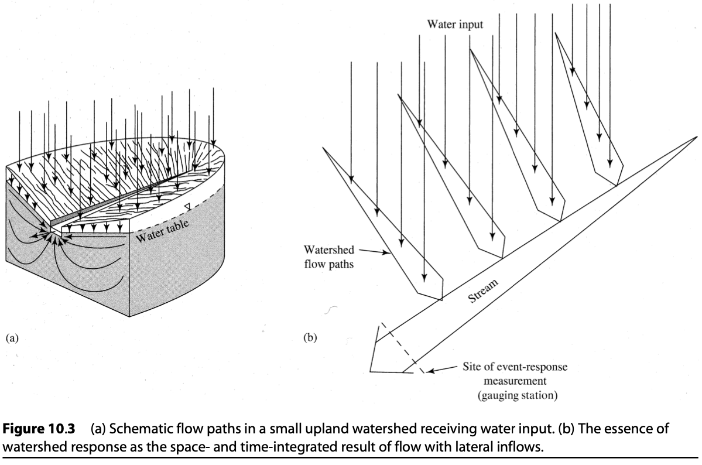 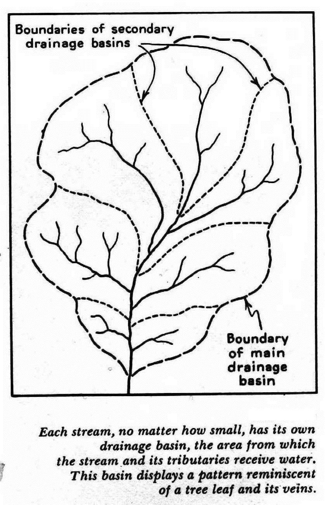 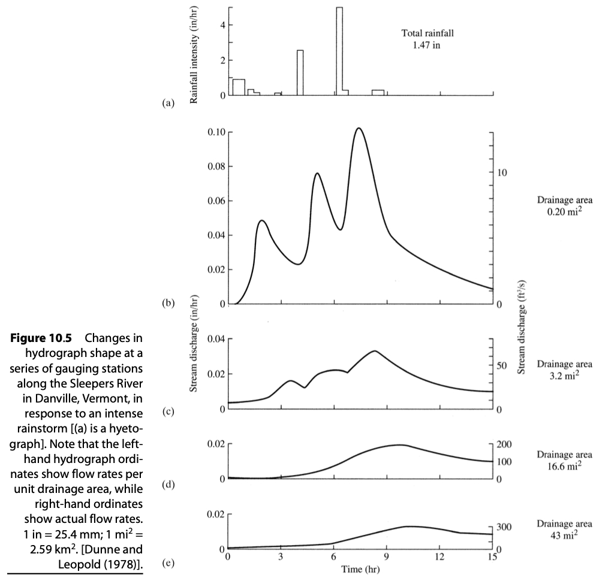
Watershed response:
- The volume of water appearing in the apparent response hydrograph for a given event is usually only a fraction (often a very small fraction) of the total input. The remainder of the water input ultimately leaves the watershed as:
- evapotranspiration;
- streamflow that occurs so long after the event that it cannot be associated with that event; or
- ground-water outflow from the watershed.
- The water identified as the response to a given event may originate on only a fraction of the watershed; this fraction is called the contributing area.
- The extent of the contributing area may vary from event to event and during an event.
- At least some of the water identified as the response to a given event may be “old water” that entered the watershed in a previous event.
13.2 base flow separation
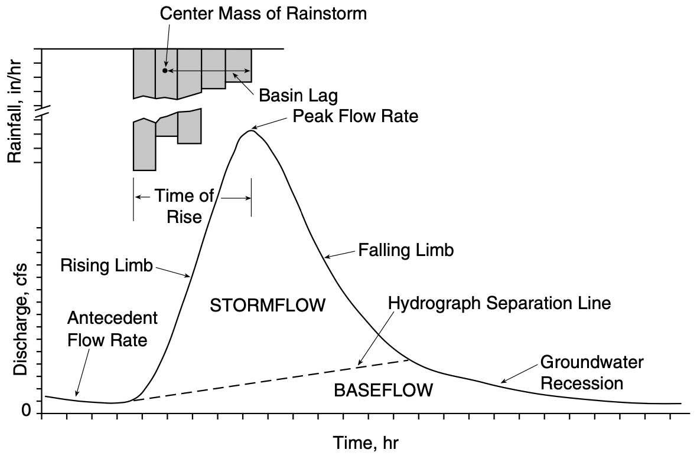
Base flow
Base flow is the portion of streamflow that is presumed to have entered the watershed in previous events and to be derived from persistent, slowly varying sources. (Ground water is usually assumed to be the main, if not the only, such source.)
Event flow
Event flow (also called direct runoff, storm runoff, quick flow, or storm flow) is considered to be the direct response to a given water-input event.
Total flow
Total flow rate at any instant q(t) is the sum of event-flow rate q^*(t) and base-flow rate q_{BF}(t):
q(t) = q^*(t) + q_{BF}(t)
Attention!
Graphical flow separation techniques are heuristic and have no direct scientific basis.
13.3 Urbana, IL
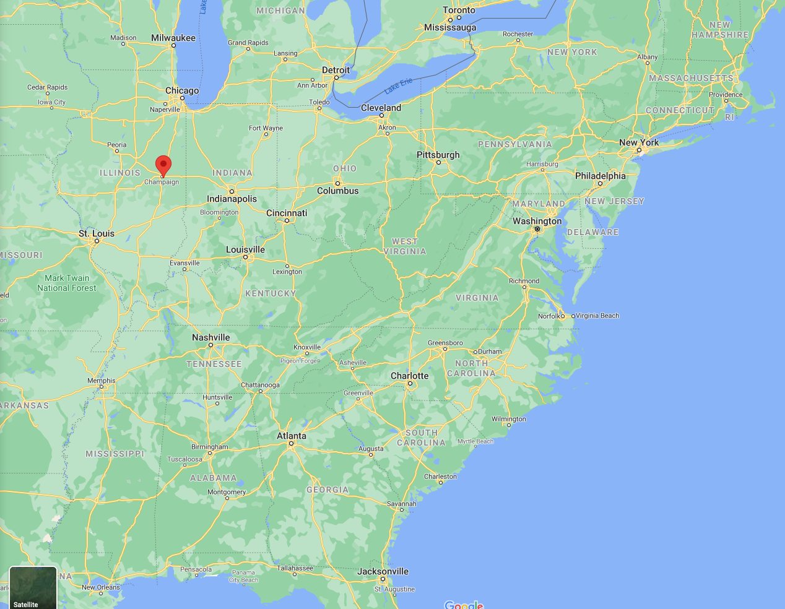
13.3.1 hyetograph, hydrograph
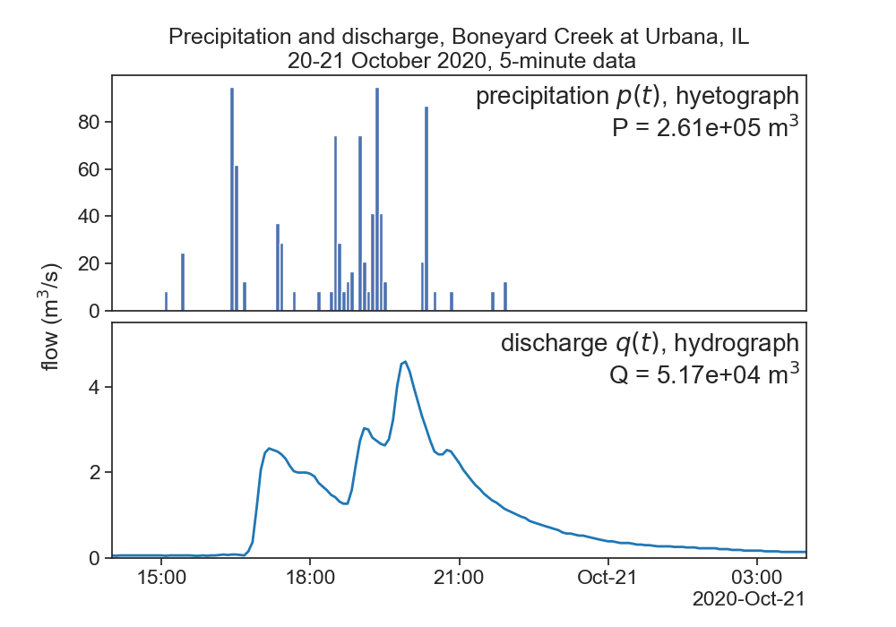
13.3.2 notation
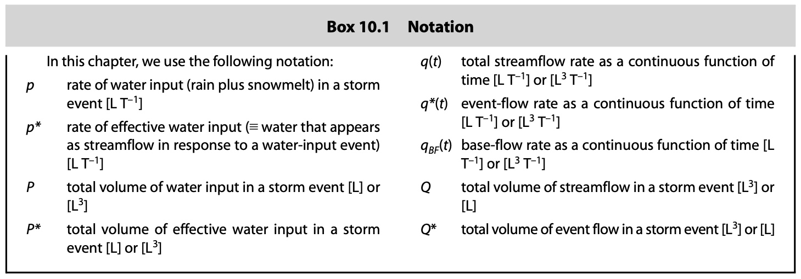
13.3.3 base flow separation
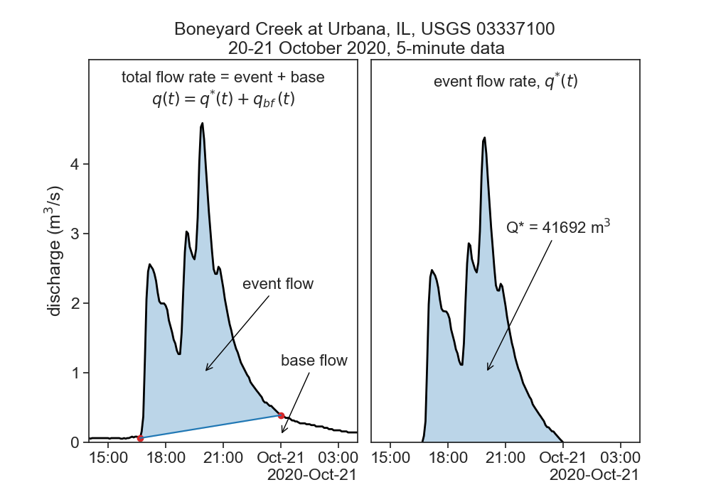
13.3.4 effective precipitation = effective discharge
P^* = Q^*
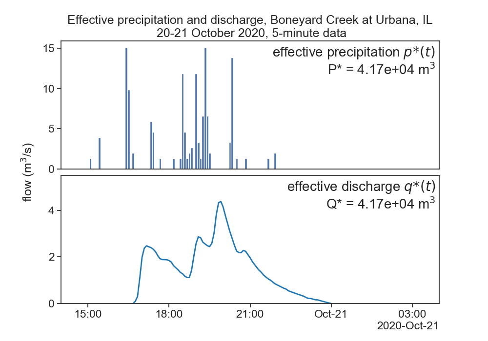 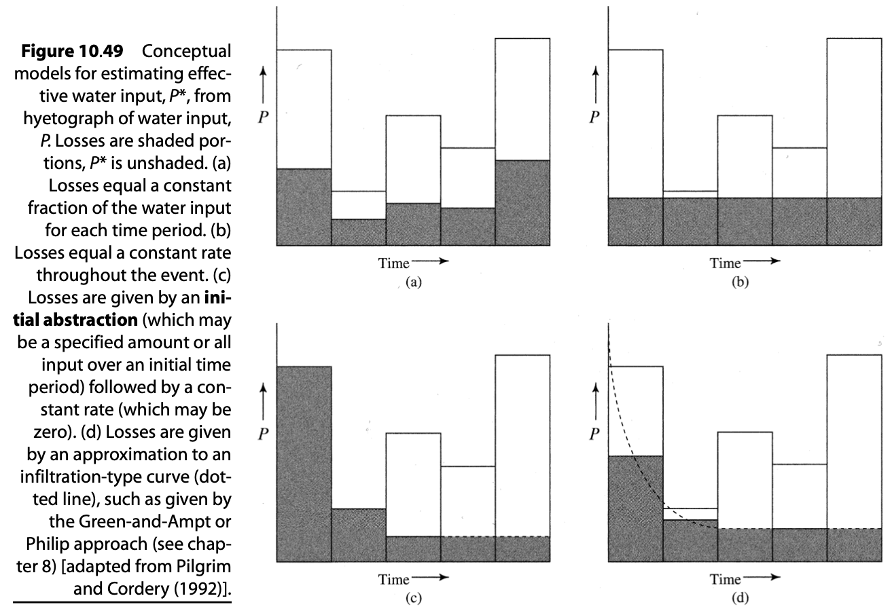
13.3.5 time lags
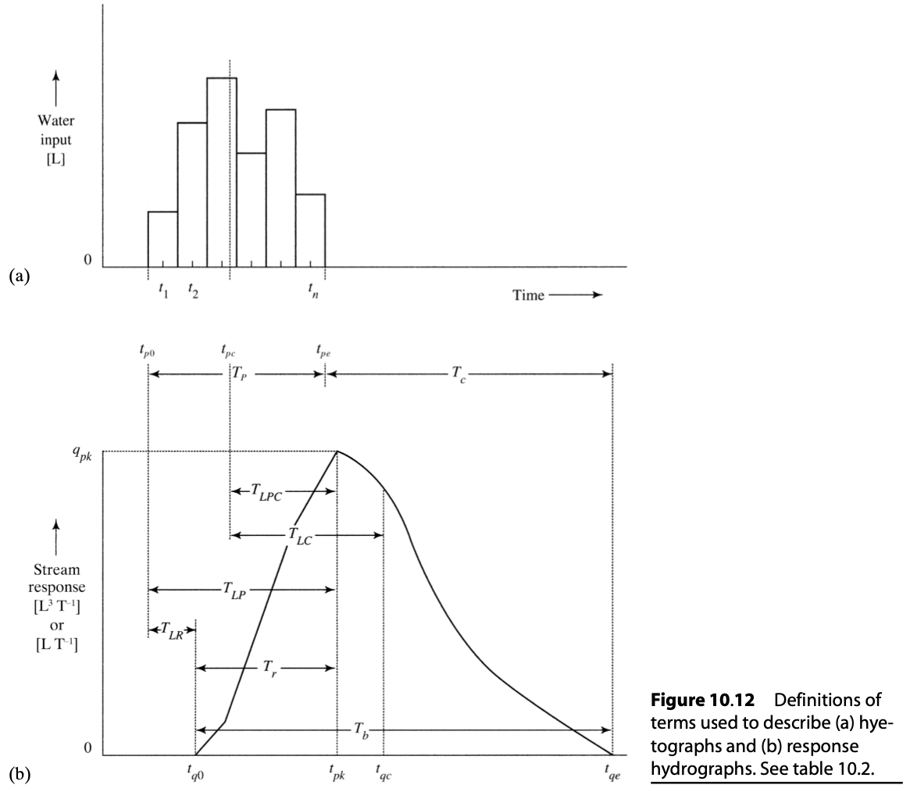 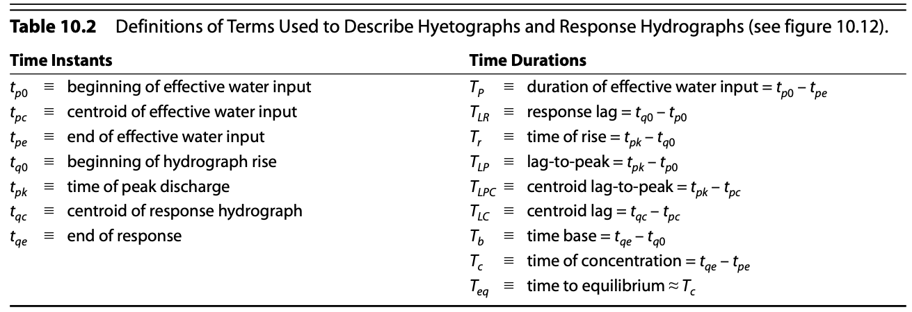 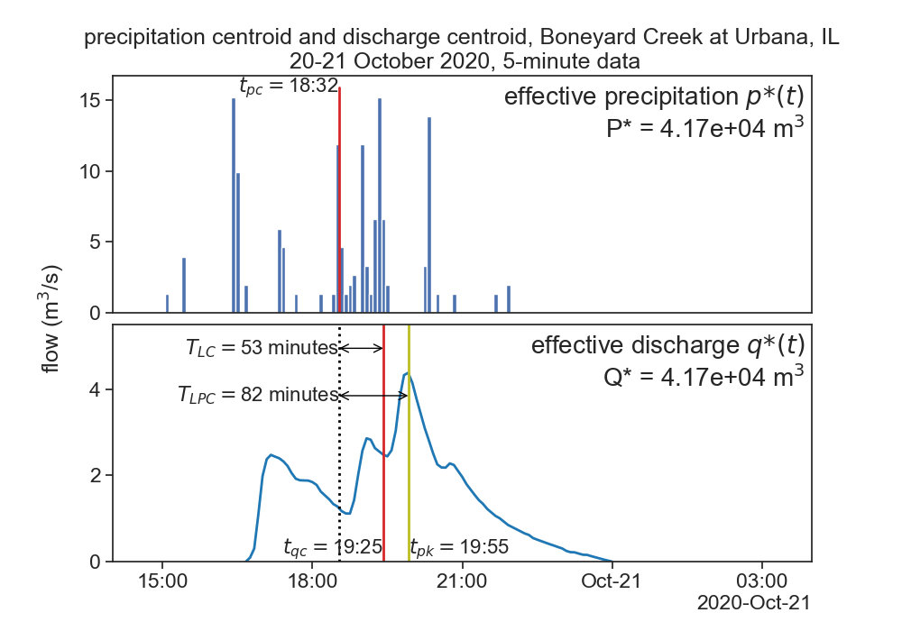
It is commonly assumed that T_{LPC} \simeq 0.60 \cdot T_c, where T_c is the time of concentration, i.e., the time it takes water to travel from the hydraulically most distant part of the contributing area to the outlet.
The centroid is a weighted-average time, each time instant is multiplied by the amount of flow in that instant.
Time of precipitation centroid:
t_{pc} = \frac{\displaystyle \sum_{i=1}^n p_i^* \cdot t_i}{P^*}
Time of streamflow centroid:
t_{qc} = \frac{\displaystyle \sum_{i=1}^n q_i^* \cdot t_i}{Q^*}